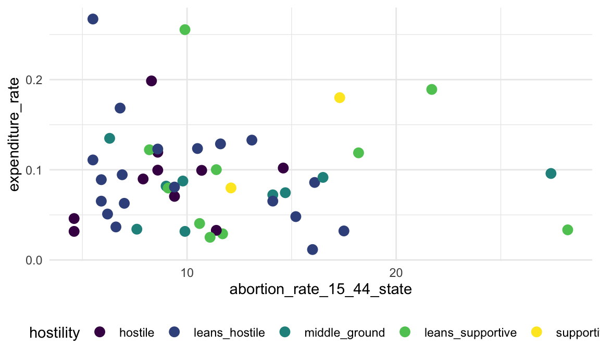
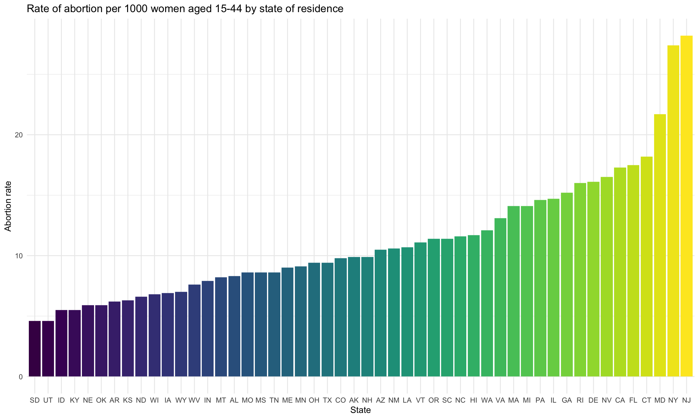
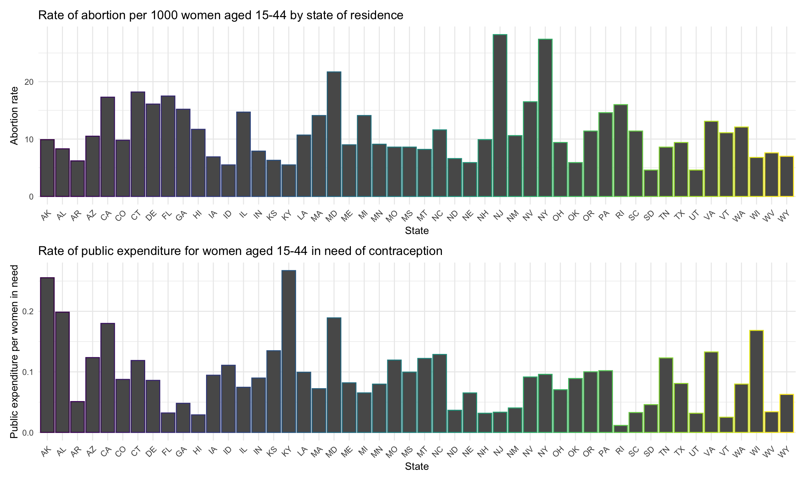

Analysis
Linh Tran
11/30/2020
- Exploratory data analysis
- Rate of abortion and public contraceptive expenditure by state?
- Rate of abortion by state
- Public expenditure by state
- Hostility towards abortion in policy by state and abortion rate
- Top 10 states with the highest abortion rate
- Statistical analysis
- Is there a relationship between rate of abortion and hostility towards abortion in policy by state and/or contraceptive funding/abortion access by state? ALL MODELS HERE
- Is there a relationship between rate of abortion and public contraceptive expenditure by state? probably not going to use
- Is there a relationship between rate of abortion and abortion access by state? moved to chunk above
- Is there a relationship between teen birth rate and percent of women in need of publicly-funded contraceptive resources? probably not going to use
Load dataset
merge_data = read_csv("data/merge_data.csv")##
## ── Column specification ────────────────────────────────────────────────────────
## cols(
## .default = col_double(),
## state_id = col_character(),
## hostility = col_character()
## )
## ℹ Use `spec()` for the full column specifications.Exploratory data analysis
Rate of abortion and public contraceptive expenditure by state?
merge_data %>%
mutate(hostility = fct_relevel(hostility, c("hostile", "leans_hostile", "middle_ground", "leans_supportive", "supportive"))) %>%
ggplot(aes(x = abortion_rate_15_44_state, y = expenditure_rate, color = hostility)) +
geom_point(size = 3)
Rate of abortion by state
merge_data %>%
mutate(state_id = fct_reorder(state_id, abortion_rate_15_44_state)) %>%
ggplot(aes(x = state_id, y = abortion_rate_15_44_state, fill = state_id)) +
geom_bar(stat = "identity") +
labs(
x = "State",
y = "Abortion rate",
title = "Rate of abortion per 1000 women aged 15-44 by state of residence"
) +
theme(legend.position = "none")
Public expenditure by state
merge_data %>%
mutate(state_id = fct_reorder(state_id, expenditure_rate)) %>%
ggplot(aes(x = state_id, y = expenditure_rate, fill = state_id)) +
geom_bar(stat = "identity") +
labs(
x = "State",
y = "Public expenditure per women in need",
title = "Rate of public expenditure for women aged 15-44 in need of contraception"
) +
theme(legend.position = "none")
abortion_rate =
merge_data %>%
ggplot(aes(x = state_id, y = abortion_rate_15_44_state, color = state_id)) +
geom_bar(stat = "identity") +
labs(
x = "State",
y = "Abortion rate",
title = "Rate of abortion per 1000 women aged 15-44 by state of residence"
) +
theme(legend.position = "none", axis.text.x = element_text(angle = 45, hjust = 1))
public_expenditure =
merge_data %>%
ggplot(aes(x = state_id, y = expenditure_rate, color = state_id)) +
geom_bar(stat = "identity") +
labs(
x = "State",
y = "Public expenditure per women in need",
title = "Rate of public expenditure for women aged 15-44 in need of contraception"
) +
theme(legend.position = "none", axis.text.x = element_text(angle = 45, hjust = 1))
abortion_rate / public_expenditure
Hostility towards abortion in policy by state and abortion rate
merge_data %>%
select(state_id, percent_abortion, abortion_rate_15_44_state ,hostility) %>%
mutate(hostility = as.factor(hostility)) %>%
group_by(hostility) %>%
summarize(
n = n(),
abortion_rate = mean(abortion_rate_15_44_state)
) %>%
mutate(hostility = fct_relevel(hostility, c("hostile", "leans_hostile", "middle_ground", "leans_supportive", "supportive"))) %>%
ggplot(aes(x = hostility, y = abortion_rate, fill = hostility)) +
geom_bar(stat = "identity") +
labs(
x = "Hostility towards abortion in policy by state",
y = "Average rate of abortion by state",
title = "Hostility and Abortion Rate"
)## `summarise()` ungrouping output (override with `.groups` argument)
Top 10 states with the highest abortion rate
top_abortion_rate =
merge_data %>%
top_n(10, abortion_rate_15_44_state) %>%
mutate(state_id = fct_reorder(state_id, abortion_rate_15_44_state)) %>%
plot_ly(x = ~abortion_rate_15_44_state, y = ~state_id, type = 'bar', orientation = 'h', width = 900, height = 700, marker = list(color = c('rgba(222,45,38,1)', 'rgba(222,45,38,1)', 'rgba(222,45,38,1)', 'rgba(204,204,204,1)', 'rgba(204,204,204,1)', 'rgba(222,45,38,1)', 'rgba(204,204,204,1)', 'rgba(204,204,204,1)', 'rgba(204,204,204,1)', 'rgba(204,204,204,1)'))) %>%
layout(title = "Top 10 states with highest abortion rate",
xaxis = list(title = "Abortion rate"),
yaxis = list(title = "State"),
showlegend = FALSE)
top_expend_abortion =
merge_data %>%
top_n(10, total_expend_abortion) %>%
mutate(state_id = fct_reorder(state_id, total_expend_abortion)) %>%
plot_ly(x = ~total_expend_abortion, y = ~state_id, type = 'bar', orientation = 'h', width = 900, height = 700, marker = list(color = c('rgba(222,45,38,1)', 'rgba(222,45,38,1)', 'rgba(204,204,204,1)', 'rgba(222,45,38,1)', 'rgba(222,45,38,1)', 'rgba(204,204,204,1)', 'rgba(204,204,204,1)', 'rgba(204,204,204,1)', 'rgba(204,204,204,1)', 'rgba(204,204,204,1)'))) %>%
layout(title = "Top 10 states with highest total expend",
xaxis = list(title = "total_expend_abortion"),
yaxis = list(title = "State"),
showlegend = FALSE)
subplot(top_abortion_rate, top_expend_abortion, shareX = FALSE, shareY = FALSE,
titleX = FALSE, titleY = FALSE)## Warning: `arrange_()` is deprecated as of dplyr 0.7.0.
## Please use `arrange()` instead.
## See vignette('programming') for more help
## This warning is displayed once every 8 hours.
## Call `lifecycle::last_warnings()` to see where this warning was generated.Statistical analysis
Is there a relationship between rate of abortion and hostility towards abortion in policy by state and/or contraceptive funding/abortion access by state? ALL MODELS HERE
merge_data =
merge_data %>%
mutate(hostility = fct_relevel(hostility, c("hostile", "leans_hostile", "middle_ground", "leans_supportive", "supportive")))
# simple linear regression: is there a relationship between hostility towards abortion and access to abortion?
hostility_bc_access <- lm(percent_women_no_provider ~ hostility, data = merge_data)
summary(hostility_bc_access)##
## Call:
## lm(formula = percent_women_no_provider ~ hostility, data = merge_data)
##
## Residuals:
## Min 1Q Median 3Q Max
## -33.21 -14.49 -3.25 15.95 46.67
##
## Coefficients:
## Estimate Std. Error t value Pr(>|t|)
## (Intercept) 65.300 6.754 9.668 1.48e-12 ***
## hostilityleans_hostile -14.089 8.344 -1.688 0.098238 .
## hostilitymiddle_ground -35.967 9.814 -3.665 0.000650 ***
## hostilityleans_supportive -40.100 9.552 -4.198 0.000125 ***
## hostilitysupportive -57.300 16.544 -3.463 0.001182 **
## ---
## Signif. codes: 0 '***' 0.001 '**' 0.01 '*' 0.05 '.' 0.1 ' ' 1
##
## Residual standard error: 21.36 on 45 degrees of freedom
## Multiple R-squared: 0.3976, Adjusted R-squared: 0.3441
## F-statistic: 7.427 on 4 and 45 DF, p-value: 0.0001108# simple linear regression: is there a relationship between hostility towards abortion and abortion rates by state?
hostility_model = lm(abortion_rate_15_44_state ~ hostility, data = merge_data)
summary(hostility_model)##
## Call:
## lm(formula = abortion_rate_15_44_state ~ hostility, data = merge_data)
##
## Residuals:
## Min 1Q Median 3Q Max
## -6.511 -3.639 -1.143 2.583 14.589
##
## Coefficients:
## Estimate Std. Error t value Pr(>|t|)
## (Intercept) 8.870 1.584 5.599 1.23e-06 ***
## hostilityleans_hostile 1.046 1.957 0.534 0.5958
## hostilitymiddle_ground 3.941 2.302 1.712 0.0938 .
## hostilityleans_supportive 5.140 2.241 2.294 0.0265 *
## hostilitysupportive 5.830 3.881 1.502 0.1400
## ---
## Signif. codes: 0 '***' 0.001 '**' 0.01 '*' 0.05 '.' 0.1 ' ' 1
##
## Residual standard error: 5.01 on 45 degrees of freedom
## Multiple R-squared: 0.1583, Adjusted R-squared: 0.08345
## F-statistic: 2.115 on 4 and 45 DF, p-value: 0.09451# simple linear regression: is there a relationship between abortion access and abortion rates by state?
bc_access_model <- lm(abortion_rate_15_44_state ~ percent_women_no_provider, data = merge_data)
summary(bc_access_model)##
## Call:
## lm(formula = abortion_rate_15_44_state ~ percent_women_no_provider,
## data = merge_data)
##
## Residuals:
## Min 1Q Median 3Q Max
## -6.9229 -2.4099 -0.2392 2.2984 11.6648
##
## Coefficients:
## Estimate Std. Error t value Pr(>|t|)
## (Intercept) 16.9309 1.0793 15.687 < 2e-16 ***
## percent_women_no_provider -0.1319 0.0214 -6.165 1.4e-07 ***
## ---
## Signif. codes: 0 '***' 0.001 '**' 0.01 '*' 0.05 '.' 0.1 ' ' 1
##
## Residual standard error: 3.95 on 48 degrees of freedom
## Multiple R-squared: 0.4419, Adjusted R-squared: 0.4303
## F-statistic: 38 on 1 and 48 DF, p-value: 1.404e-07# multivariate regression: is there a relationship between abortion access and hostility towards abortion with abortion rates by state?
hostility_adj_model = lm(abortion_rate_15_44_state ~ hostility + percent_women_no_provider, data = merge_data)
summary(hostility_adj_model)##
## Call:
## lm(formula = abortion_rate_15_44_state ~ hostility + percent_women_no_provider,
## data = merge_data)
##
## Residuals:
## Min 1Q Median 3Q Max
## -7.6219 -2.4178 -0.2876 2.4971 11.3703
##
## Coefficients:
## Estimate Std. Error t value Pr(>|t|)
## (Intercept) 17.8774 2.2732 7.865 6.32e-10 ***
## hostilityleans_hostile -0.8977 1.6509 -0.544 0.589
## hostilitymiddle_ground -1.0201 2.1455 -0.475 0.637
## hostilityleans_supportive -0.3913 2.1619 -0.181 0.857
## hostilitysupportive -2.0739 3.5723 -0.581 0.565
## percent_women_no_provider -0.1379 0.0286 -4.823 1.73e-05 ***
## ---
## Signif. codes: 0 '***' 0.001 '**' 0.01 '*' 0.05 '.' 0.1 ' ' 1
##
## Residual standard error: 4.098 on 44 degrees of freedom
## Multiple R-squared: 0.4494, Adjusted R-squared: 0.3868
## F-statistic: 7.181 on 5 and 44 DF, p-value: 5.471e-05Is there a relationship between rate of abortion and public contraceptive expenditure by state? probably not going to use
bc_fund_model <- lm(abortion_rate_15_44_state ~ expenditure_rate, data = merge_data)
summary(bc_fund_model)##
## Call:
## lm(formula = abortion_rate_15_44_state ~ expenditure_rate, data = merge_data)
##
## Residuals:
## Min 1Q Median 3Q Max
## -6.983 -3.815 -1.200 2.737 16.627
##
## Coefficients:
## Estimate Std. Error t value Pr(>|t|)
## (Intercept) 11.763 1.454 8.092 1.6e-10 ***
## expenditure_rate -5.673 13.484 -0.421 0.676
## ---
## Signif. codes: 0 '***' 0.001 '**' 0.01 '*' 0.05 '.' 0.1 ' ' 1
##
## Residual standard error: 5.278 on 48 degrees of freedom
## Multiple R-squared: 0.003675, Adjusted R-squared: -0.01708
## F-statistic: 0.177 on 1 and 48 DF, p-value: 0.6758Is there a relationship between rate of abortion and abortion access by state? moved to chunk above
bc_access_model <- lm(abortion_rate_15_44_state ~ percent_women_no_provider, data = merge_data)
summary(bc_access_model)##
## Call:
## lm(formula = abortion_rate_15_44_state ~ percent_women_no_provider,
## data = merge_data)
##
## Residuals:
## Min 1Q Median 3Q Max
## -6.9229 -2.4099 -0.2392 2.2984 11.6648
##
## Coefficients:
## Estimate Std. Error t value Pr(>|t|)
## (Intercept) 16.9309 1.0793 15.687 < 2e-16 ***
## percent_women_no_provider -0.1319 0.0214 -6.165 1.4e-07 ***
## ---
## Signif. codes: 0 '***' 0.001 '**' 0.01 '*' 0.05 '.' 0.1 ' ' 1
##
## Residual standard error: 3.95 on 48 degrees of freedom
## Multiple R-squared: 0.4419, Adjusted R-squared: 0.4303
## F-statistic: 38 on 1 and 48 DF, p-value: 1.404e-07Is there a relationship between teen birth rate and percent of women in need of publicly-funded contraceptive resources? probably not going to use
teenbirth_model <- lm(birthrate_15_19_state ~ need_bc_under_20, data = merge_data)
summary(teenbirth_model)##
## Call:
## lm(formula = birthrate_15_19_state ~ need_bc_under_20, data = merge_data)
##
## Residuals:
## Min 1Q Median 3Q Max
## -12.175 -4.675 -1.032 3.811 13.814
##
## Coefficients:
## Estimate Std. Error t value Pr(>|t|)
## (Intercept) 2.106e+01 1.319e+00 15.966 <2e-16 ***
## need_bc_under_20 -3.660e-06 9.675e-06 -0.378 0.707
## ---
## Signif. codes: 0 '***' 0.001 '**' 0.01 '*' 0.05 '.' 0.1 ' ' 1
##
## Residual standard error: 6.848 on 48 degrees of freedom
## Multiple R-squared: 0.002973, Adjusted R-squared: -0.0178
## F-statistic: 0.1431 on 1 and 48 DF, p-value: 0.7069